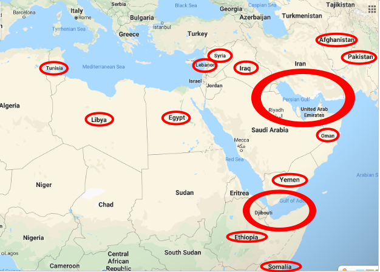

Understand the real spirit the behind Bitcoin and Ethereum communities and
how it tackles the Banking Hack. Anticipate strategic movements. Contact us
for strategic updates and investment advice.
Keywords: Bitcoin, Ethereum, Central Bank, Banking Lobby, Politics, Crisis,
Monetary Policy, Stock Market Crash, Interest Rate spread, Crypto-Parachute
Blockchain is the structure of the next generation of internet. But
blockchain has been popularized through Bitcoin, therefore it is more
accurate to introduce you to Bitcoin first and then to blockchain.
Technically Bitcoin is the result of almost 40 years of research in the
field of cryptography, theory of games and
Cryptography is the art and science of keeping messages secure. Blockchain
uses cryptography to sign and authenticate (verify the identity of the
sender of) messages, store accounts and process transactions publicly but
preserving privacy. More on this in the technical report.
Theory of games is concerned with the strategic interaction of individuals
in a 'game'. A 'game' is defined as a situation containing a set of rules
and outcomes. For blockchain, theory of games ensures a system design in
which the best strategy for all individuals is to collaborate honestly.
Finally economics is the art and science of how to satisfy needs, specially
collaborating. Economics shows us the banking system is biased toward a
small elite of bankers and their network of credit-takers (businessmen,
governments, anyone striving to keep up with advertisement-induced
consumerism...). Beyond priviledged access to unpayable credit and banking
currency is constantly devaluated to keep prices increasing and pay off the
debt more easily .
Bankers count with a privilege of being able to spy on everyone else bank
account, and also to forecast in advance (or deliberately cause) Crises and
booms. For anyone not belonging to this small network of bankers, banking is
unsustainable and suboptimal as it enslave everyone around an unpayable debt
and drains wealth from everyone towards bankers and their collaborators
(politicians, sponsored academicians, international organizations leaders,
CEOs...).
In effect, how is it possible that having so many abundance prices keep
increase every year? Because bankers grow banking currency even faster than
production in order to devaluate the currency they owe to all their
depositors. Elemental, dear reader.
On the other side Bitcoin is born transparent, compatible with individual
freedom as it does not require to confiscate gold to be able to service
people, not even force taxes to be paid in Bitcoins. Bitcoin will work not
because it has an intrinsic value as money product like gold, it will work
because it is the most transparent, optimal and sustainable manner to
transfer money instantly around the globe, and it can be done with a credit
cards or the phone, objects we already use today. Ask your banker to
transfer more than $3000 and you'll realize how bureaucratic, idle, deeply
suboptimal and definitely unsustainable banking is compared to Bitcoin.
Obsolete.
Autumn 2019: Price Skyrocketing
Looking forward since summer 2019, cryptocurrencies (blockchain units of
account) future looks garish.
In spring-summer 2020 the bitcoin reward will halve. The reward halving
implies Bitcoin inflation will halve. Rewards are the only new bitcoins
created, more on this in the technical paper. The markets will receive less
supply from miners cashing their reward, recalling everyone that there will
only be 21 million Bitcoins consequently pulling the price upwards.
Fig. 1 Ethereum Price From 2016 to 2019 And Prediction
Ethereum: Decentralized Applications Platform (Source:
tradingview.com)
Also Ethereum, the 2nd largest public blockchain by capitalization is going
to shift from POW (Proof-Of-Work) to POS (Proof-Of-Stake) in the next 3
years. This shift has several impactful implications:
Ethereum blockchain will be much more scalable and efficient. Indeed under
POW the work of the network is replicated on every node, and that
excessively consumes energy. Under POS the Ethereum blockchain will be split
into 1084 sub-blockchains called shards and validators will be randomly
assigned to one of the 1084 shards (partitions of the blockchain) minutes
before having to generate a collation (a 'shard block') and only some
witness validator nodes will verify the collation.
Second, at least 16384 x 32 ETH (more than 500K ETH out of 100 Million ETH)
must be withdrawn from circulation and put into deposit. New validators
nodes must burn 32 ETH in order to deposit 32 ETH2 in the Beacon chain, a
parallell chain managed by a smart contract responsible for the random
assignment of validator nodes to each shard. Long story short, many ethers
will be withdrawn from circulation, reducing supply and even putting buying
pressure on the market as new investors attracted by the ~11% yield on
validator nodes will be buying 32 Ethers to create a validator node. More on
this in the technical report.
On the other side, since September 2019 the US central bank has already had
to lower interest rates from 2.25-2.5% to 2-2.25% and to pump $53 billion in
order to keep intertbank interest rate in its target range. The fed funds
rate climbed to 2.29% out of the 2-2.25% forcing the fed to pour money into
the market. Indeed investors prefer 1.7% for 2 years than 2.29% overnight
because they predict a sudden fall of interest rates due to a crash. A crash
would force a great monetary inflation devaluating the dollar. In the face
of inflation investors will be dumping their low interest bonds unless
interest rates climb to competitive levels, but that can only be achieved
through war. More on this below. In short, last time the fed lowered
interest rates and poured money directly into the markets there was no
alternative monetary system. But this time Bitcoin is already 10 years old,
Ethereum is 5 years old and they represent great alternatives to the
tumbling bank's fiat currency.
On Competition And Principles Of Bitcoin And Ethereum
Also Facebook, the company that owns facebook, whatsapp and instagram, has
announced that they, along with tens of partners, will be putting each $10
million in a fund as collateral in order to back their cryptocurrency to be
released in 2020: the libra cryptocurrency. The libra cryptocurrency will
probably see increased adoption as people will easily use it from the
aforementioned apps, facebook, whatsapp and instagram, which are already
downloaded and installed in many phones. For example people will finally be
able to buy and sell things in instagram or through whatsapp. This
functionality will only bring more curious people to explore the blockchain
realm.
However, this crypto is different than public blockchain cryptos like
Bitcoin and Ethereum. Public blockchains are made by people that wants avoid
governance, which is the action of a governing state. Public blockchains
purpose is optimal and minimal cost of collaboration. To make their currency
succeed, communities like Bitcoin and Ethereum look for innovative ways to
make their monetary system secure, inclusive for new comers, and scalable
for millions of transactions every second. On the other hand Facebook is a
profit corporation and as all corporations their purpose is to maximize
profits for stockholders. Facebook is designed to catch your attention as
much time as possible because ultimately Facebook earns money on the ads
they show to users.
Furthermore Facebook has betrayed users selling data to mass propaganda
companies like Cambridge Analytica and spying on users on behalf of the US
government CIA. Inevitably Facebook would be obliged to collaborate again
provided some urgent excuse like terrorism and war. But that is just too
dangerous because to mantain their Banking Hack bankers have an incentive to
spy on us. Original blockchains, Bitcoin and Ethereum, have been developed
by intellectual warriors that are fed up of governments submission to
monetary domination. So they designed the system bottom-up grounded on sound
principles of freedoms and universal privacy. In public blockchains like
Bitcoin the data is publicly available, but encrypted in such a way it's
hard to find the identity of an account holder and it is possible to hide
one's identity definitively, which is closer to reality of cash
transactions.
I pointed here to Facebook's Libra but the reasoning for any other private
or national cryptocurrency is the same, including Ripple and China
Cryptocurrency. If these people wanted to have a cryptocurrency founded on
freedom and privacy they would contribute to Bitcoin and Ethereum which are
communities that already have acquired this fair culture. But the prospects
of controlling currency are just a too attractive to let pass the
opportunity.
The Tumbling 20's Monetary War
The only way to save the planet, is to make that everything is concerns
everybody. On the short term we said we expect a Tumbling 20's crash and a
subsequent tumbling interest rates to reach reflation with credit. However
low interest rates cannot last because ethereum validator nodes earn ~11%.
There's a rule of thumb in financial markets strategy: smart money moves
where interest rates are higher. If US, Japan and Europe interest rates stay
at current level, that is below 2%, long enough smart money will withdraw
from banks and place their money in higher interest earning alternatives
that did not exist at the time of the last crisis like Ethereum validator
nodes.
So on the long term central bankers will have to face a dilemma, low
interest rates to stimulate the economy or high interest rates to attract
money. Most likely, low interest rates will not be enough so they will pour
money into the financial markets buying government bonds. Like last time
poured money won't go to the economy, huge amounts of new money will stay in
the speculative markets and probably move to the blockchain investments
because the capital growth and yield are higher there. As central bankers
understand what is happening they will have to raise interest rates sharply
in the attempt to bring back smart money to banks. Even though they will
raise rates, central banks will keep buying bonds in the market to sustain
the quantity of money otherwise tumbling due to everybody redeeming their
debt because of high interest rates.
Artist:
@CeliaYouGonzalez
The Tumbling 20's Crisis will be very chaotic. Imagine us, our parents, or
our grandparents losing most of their savings that were invested in
financial markets. Imagine them going to the bank and crying at the
kilometric queue there is to withdraw their life savings, and after an
eternal idle wait time of complaining, withdraw nothing but 100$ because
there are no more bills. Imagine yourself watching how angry demonstrators
not knowing how to communicate their feeling of loss occupy the streets and
how thought-less policemen beat every person on the way because chaos is
going out of control. I hope this time is different. Finally, you'll see how
politicians will be meeting to 'solve' the Crisis but will probably be
afraid to make the right decision which is challenging the banking system.
Governments will keep complying with banks until really independent thinkers
that are conscious of the origin of system flaws, like Ron Paul and John
McAfee, reach the political sphere. So probably, submissive governments will
tax cryptos and take bank-favoring policies in the years to come. To reach
economic freedom people is going to have to understad and decide for
themselves.
The banks, and their under cover network of think tanks, lobbies,
International Organizations, NGOs and governmental agencies, will create the
screenplay needed for any decision, any demagogic and tyrannical decision
bank want governments to take. What prejudices and false claims will be
leveraged? Well there are already signs of them like the drone attacks to
Saudi Oil factories. Let's dig into the why.
One thing we are sure: banks need a big credit-taker to reflate the quantity
of money, specially once interest rates rise. Yet debtors are rare at a high
interest rate. A major reason must be put forward for the debtor to take
such a risky debt and assuredly the debt balance will never be paid off
without a high inflation devaluating currency first. What can justify such a
risk? Only war. For the state to take a debt a major reason must be put
forward: national terrorism and/or military international intervention. With
Trump having heavily spoken about North Korea, Iran and Venezuela it is
likely that, if there is a war, one of these countries, will be the target.
Personally I placed my bets on Iran months ago because they are the main
financiers of Hezbollah, along with Syria that has been greatly weakened
since 2011. Hezbollah is a moderate Muslim milicia that tenaciously
protected Lebanon against Israel in summer 2006.
In effect, historically the United-States have had impeccable and almost
submissive relations with Israel. Recently some premonitory news are paving
the way for another Middle East war: 2 Israelites drones would have been
chased in Lebanese soil and Hezbollah would have responded targetting a
military car in Israelite ground (August 25th 2019). Two, supposedly
Iranian, drones would have targetted Saudi oil facilites from Aramco
company; the US having stated to know from where they were sent in Iran.
Whether these news are real or planned by bankers to trigger a war is up to
the reader's judgement and understanding of each character of the
screenplay. In any way "National security" spending and military spending is
indispensable to justify government debt at a high interest.

Fig. 2 US Military Interventions In The Middle East
Source:
List of Wars Involving the USA
North Korea has also been heavily mentioned in the news since Trump is in
power. But to trying to war amid Japan, China and Russia is a lost battle, a
fail. Trump wants to win. After more than 35 years of wars in the Middle
East weakening underdeveloped countries why would he be stubborn with North
Korea? The US has made military interventions around Israel and Saudi Arabia
in Lebanon (1982-1984), Afghanistan (2001-present), Pakistan (2004-present),
Iraq (2003-2011), Syria (2014-present) and Iran (2019-present) but also in
strategic countries like Yemen (2015-present) and Somalia (2007-present)
that surround the gulf of Aden, which is the door of the Red Sea towards the
Indian Ocean, a necessary passage to use the Suez Canal, a key passage for
worldwide maritime logistics between East and West. Also the US favored
rebels during the Arab spring in Bahrain, Egypt, Libya, Tunissia, Syria and
Yemen in order to foster division and weaken these countries.
Fig. 3 Hormuz Strait is the most important passage in the world for oil
supply
Source:
GeoExPro.com
There is one more reason to target Iran and Venezuela: oil. These two
countries have the cheapest gasoline in the world thanks to their oil
reserves. Their production of oil barrels together isn't a third of the US
production but their reserves together are about 12 times the US reserves.
So evidently US is targetting the weak countries of the top 5 countries by
oil reserves. Venezuela has already been greatly weakened by government
intervention and corruption. The US sanctions, which prevent Venezuela from
accessing international financing have pushed the government to almost gift
the oil by issuing oil-backed cryptocurrency (December 2017) at cheap price
to access international financing. However the oil-backed crypto has not
been used and the population is living the nightmare of a currency that has
lost all its value. All life-time savings gone in less than a decade! And
all it takes is to use a decent money according to its original purpose: a
product that stores the value of wealth, like gold and silver instead of
bills or any banking subsitute.
Also Iran is a main target because the Hormuz Strait, in the coast of Iran
is a very key passage to oil distribution from Saudi Arabia, Bahrain, United
Arab Emirates, Qatar, Iraq and, clearly, Iran.(see Fig 3). So probably there
is an undergoing war forming there in order to control that passage that
distributes oil to Europe and the US, but also to the South East Asia and
Australia. That would justify a soaring oil price. As oil is used in to make
plastic and gasoline, which are used in every package and to transport
goods, all prices would rise. That is what debtors gang (bankers that owe
deposits, governments and big corporations that owe debt) want in order to
pay off their debts more easily.
By the way, Cyprus, Israel, Gaza, Lebanon and Syria also share an almost
virgin oil and gas reserve discovered in 2010. Syrian war (2011) Crisis has
prevented Syria and Lebanon from starting oil extraction while Israel has
already started exploitation.
To conclude, Bitcoin and Ethereum smart contracts apply Cybernetics to limit governance, to replace politicians
and blind delegation of power with an incorrupptible algorithm that unite us, but doesn't try to dominate or hack the economy like banking.
Instead of a mandatory "general-purpose" tax that ends up paying war,
collective decisions and spendings could be voluntary and specific-purpose. Some smart people claimed no one would voluntarily give money for collective projects, but the truth is Decentralization is an undergoing cultural movement
that Internet has started and that Bitcoin and Ethereum are about to speed
up. Bottom-up, decentralized, voluntary collaboration without governed institutions has proven to yield better results than control and top-down organization. Or at least more secure against power abuse.
A clear example is found in the programming world. Linux, an free open-source software developed by millions of decentralized contributions is what runs the most used technologies in the world including all Apple and Android devices, Google, Facebook and Amazon servers. The people that developed this software can have collaborated without ever meeting and the result is better than Microsoft expensive software, that we don't even know what it does as the code is not not disclosed. Start suspecting microsoft creates the viruses that kill their systems as they only know the code!
There's clearly an awakening flowing through the Internet and as soon as a critical number of people understands the potential synergy and cost efficiency brought by decentralization, culture will spread rapidly by unexplained means. And the only cause of centralization is money. Tackle banking and most problems will be naturally solved instead of being engineered to make more credit! This website is tiny tribute to the great community that is healing humanity by fighting the banking virus spread with state-of-the-art medicine.
Summarizing the Tumbling 20's:
Low interest cannot stop the Tumbling 20's Crisis because there is no bank-credit taker. Most profitable new projects have been and will be financed in cryptocurrencies as it is cheaper for the project makers
Injecting money in the markets will pump bubbles in gold, silver and cryptocurrencies, which are the main money alternatives to fiat-banking US dollar for international transactions. Gold and silver are conservatives, good for long-term wealth-preserving savings. Cryptocurrencies are dynamic for short-term transfer payments as for example crowdfunding a public work.
Assume no politician, alone, can dare to challenge banking supremacy. J.F.Kennedy did and he was killed. Trump and all other European pet politicians that follow US decisions will likely accept to go to war, to make a great debt and revive the banking hack.
In order to avoid decentralization takeover, expect authoritarian governemnts and banker-controlled mainstream medias to mention drugs, arms, terrorism, child prostitution... anything is good to disgust the public when it comes to save banking.
Venezuela, Lebanon and Iran are bankers' main targets right now. Expect some events, like the drones news in Lebanon and Iran, of a higher degree in order to hurt and plunge into war the west bank-dominated countries.
War is only an excuse to achieve inflation, i.e. debt devaluation. Monetary inflation, combined with war oil Crisis inflation will relaunch the markets after the Tumbling 20's crash happens,
Markets will rise nominally but not really: even though in appearence markets will have risen, in fact people will be able to buy less things with that increased amount of dollars they own because products will be more expensive due to monetary overexpansion and oil price rise. Probably the US will then want to "occupy" Iranian or Venezuelan oil in order to have free oil reserves.
On the other side, those who have embraced Bitcoin and Ethereum will see prices fall. Though wages will fall too in appearance (nominally), in fact the decreased amount wil be able to buy more things. Savings too, will be able to finance more capital as prices fall, then more capital will be competing for the same labor force, decreasing the capital profits portion of revenue and increasing the reward of labor. Making society as a whole more inclusive as anyone working will be more than able to fulfill all his needs. We will have more time as a whole, enough to innovate in order to find clean energies, unsalting sea water where it is missing and solve the hardest problems that have not been tackled yet by heartless profit-seeking bankers and their marionnette politicians.
Dear reader, we appreciate your feedback, comments and questions. You can contact us through any of the links below. We will be pleased to answer in the shortest time span. Also, we plan to open a cryptofund aimed to provide a secure investment vehicle during the Tumbling 20's and forward. Get in touch directly for any investment purpose, we are happy to help!